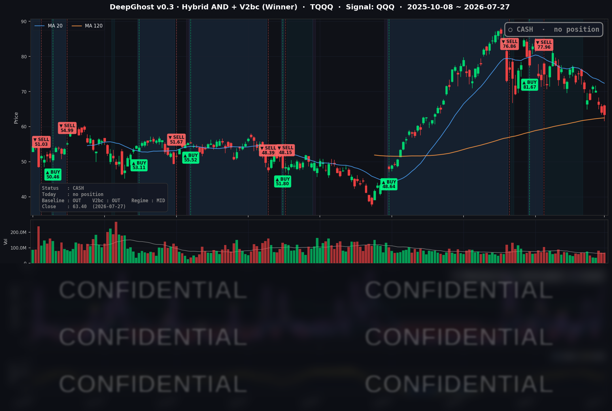

👻 매일 시그널과 히스토리를 홈페이지에서 한눈에 → www.ghostai.co.kr
다른 지수는 보합이었지만, 대형 기술주에서 가치·소형주로 자금이 크게 이동한 로테이션 장. 이틀 뒤 FOMC와 빅테크 어닝이 방향을 가를 것으로 보입니다. 하락이 끝나고 다시 반등의 기미가 보이면 모델은 매수 신호를 줄 것입니다. 뇌동하지 마시고 기다리시기 바랍니다.
📊 오늘의 매매 신호
| 항목 | 내용 |
|---|---|
| 오늘 할 일 | ✅ 아무것도 안 해도 됩니다 |
| 포지션 상태 | 💵 현금 보유 중 (OUT OF POSITION) |
| 현금 보유 기간 | 2026-06-29 ~ 2026-07-27 (20거래일) |
| TQQQ 종가 | $63.40 (-0.94%) |
지수는 사실상 보합이었지만 나스닥100은 반도체 급락에 소폭 밀렸고, TQQQ는 -0.94%로 마감했습니다. 전략은 이 구간 내내 현금을 유지하고 있어, 이벤트가 몰린 이번 주의 방향성 확인을 기다리는 관망 상태입니다.
TQQQ 시그널 — OUT OF POSITION
현재 상태: 현금 보유 중 | 신규 진입·청산 신호 없음

이날 나스닥100(QQQ)은 -0.31%로 소폭 내렸고, TQQQ는 -0.94% 밀렸습니다. 지수 레벨은 조용했지만 그 아래에서는 자금이 대형 기술주에서 빠져나와 가치·소형주로 이동하는 흐름이 뚜렷했습니다. 전략의 관점에서 이런 국면은 "방향성 확신이 낮은 구간"에 해당합니다. 상방으로 밀어붙이는 모멘텀이 뚜렷하지 않아 신규 진입을 정당화할 근거가 부족했고, 그 결과 현금을 이어가며 이틀 앞으로 다가온 FOMC와 빅테크 어닝의 결과를 기다리는 그림입니다.
오늘 미국 시장 — 시황 요약
지수 마감
| 지수 | 종가 | 등락률 |
|---|---|---|
| S&P 500 | 7,413.18 | +0.02% |
| Nasdaq Composite | 24,932.08 | -0.18% |
| Dow Jones | 52,210.08 | +0.51% |
| Russell 2000 | 2,948.03 | +0.62% |
지수만 보면 거의 움직이지 않은 하루였습니다. 하지만 속을 열어보면 이야기가 달랐습니다. 대형 기술주 비중이 큰 나스닥은 소폭 뒤로 밀린 반면, 경기·가치·블루칩이 많은 다우와 소형주 러셀 2000은 신고가권에서 상승했습니다. 엔비디아의 급락이 나스닥을 짓눌렀고, 그 빈자리를 가치·소형주가 메운 전형적인 "로테이션 장"이었습니다.
국채 금리 동향
| 만기 | 수익률 | 전일 대비 |
|---|---|---|
| 3개월 | 3.797% | -0.8bp |
| 5년 | 4.397% | -2.9bp |
| 10년 | 4.641% | -3.8bp |
| 30년 | 5.125% | -3.7bp |
전 구간에서 금리가 소폭 내렸습니다(장기물이 더 내리는 완만한 곡선 평탄화). 10년물이 -3.8bp 하락해 성장주에 미세하게 우호적인 배경이 되었지만, 하락폭이 크지 않아 이날 시장을 움직인 결정적 재료는 아니었습니다. 단기물(3개월 -0.8bp)이 거의 멈춰 있는 것은 이번 주 FOMC 동결 전망과 맞아떨어집니다. 장·단기 금리차는 여전히 정상(우상향) 곡선을 유지하며 "완만한 성장 + 끈적한 물가" 구도를 시사했습니다.
연준 발언 & 금리 패스
당일 신규 연준 발언은 없었습니다. FOMC(7/28~29) 개막 직전의 관례적 '블랙아웃' 기간이라 위원들의 정책 발언이 차단된 상태입니다. 직전까지의 톤은 대체로 매파적이었습니다 — 의장은 "인플레이션이 여전히 너무 높다"며 조기 완화 기대에 선을 그었습니다. 시장은 7/29 회의에서 금리 동결(현 정책금리 3.50~3.75%)을 강하게 컨센서스로 반영하고 있으며, 7월 회의는 점도표가 공개되지 않는 만큼 성명서 문구 변화와 기자회견 톤이 관전 포인트입니다.
오늘의 핵심 이슈
- 엔비디아 -4.99% 급락 — 2월 이후 최대 낙폭. OpenAI의 대규모(약 2,500억 달러) 데이터센터 컴퓨팅 자금 백스톱 논의가 보도되며 이른바 "순환출자" 우려가 다시 불거졌습니다. 칩 판매를 넘어 재무적 리스크에 노출될 수 있다는 경계감이 반도체 전반으로 번졌습니다. 이 여파로 애플이 엔비디아를 제치고 시가총액 1위 자리를 되찾았습니다.
- 국제 유가 하루 -8%대 급락. 미·이란 긴장이 일시적으로 소강 국면에 들어갔다는 보도로, 그동안 급등했던 지정학 프리미엄이 하루 만에 되돌려졌습니다. 소비·항공 등에는 완화 재료지만 에너지 섹터와 물가 기대에는 부담으로 작용합니다.
- 빅테크 슈퍼위크 + FOMC 대기. 7/29 FOMC 발표에 이어 마이크로소프트·메타(7/29), 애플·아마존(7/30) 어닝이 48시간 안에 몰려 있어 시장 전반이 관망세로 돌아섰습니다. 초점은 AI 투자(capex)의 지속 가능성과 클라우드 성장입니다.
변동성 & 투자심리
- VIX: 18.67 (전일 18.58 대비 +0.48%). 개별 종목(엔비디아) 충격에도 지수 변동성은 20을 밑도는 낮은 레벨에서 안정적이었습니다.
- 공포탐욕 지수(CNN Fear & Greed): 약 40으로 '공포(Fear)' 구간. 다우가 신고가권인 것과 대비되는 신중한 심리입니다.
- 종합하면 지수 보합·낮은 변동성·정상 금리곡선은 안정적이지만, 공포 심리와 반도체 급락, 그리고 줄줄이 예정된 이벤트가 겹치며 방어적인 로테이션이 시장을 지배했습니다.
매크로 & 원자재
- WTI 원유: $82.01 (-8.17%)
- Brent 원유: $87.99 (-9.08%)
- 금(Gold): $4,082.40 (+0.36%)
유가는 지정학 긴장 완화에 급락했지만, 금은 FOMC 대기와 중장기 금리 하락(실질금리 부담 완화)의 영향으로 소폭 강세를 보였습니다.
주요 종목 동향
| 종목 | 전일 종가 | 당일 종가 | 등락률 | 비고 |
|---|---|---|---|---|
| AAPL | 333.02 | 336.91 | +1.17% | 엔비디아 제치고 시총 1위 복귀. 7/30(목) 어닝 예정 |
| NVDA | 206.84 | 196.51 | -4.99% | OpenAI 자금 백스톱 순환출자 우려, 2월 이후 최대 낙폭 |
| MSFT | 381.70 | 389.10 | +1.94% | 소프트웨어 강세, 7/29(수) 장마감 후 어닝 |
| GOOGL | 319.74 | 326.56 | +2.13% | 커버리지 내 최대 상승, capex 가이던스 주시 |
| META | 595.19 | 593.87 | -0.22% | 7/29(수) 장마감 후 어닝 |
| AMZN | 232.11 | 231.39 | -0.31% | 7/30(목) 어닝, capex·클라우드 초점 |
| TSLA | 313.03 | 309.22 | -1.22% | 모멘텀 차익실현 |
| NFLX | 70.09 | 70.40 | +0.44% | 소폭 반등 |
| AVGO | 381.92 | 383.22 | +0.34% | 반도체 약세 속 선방 |
| QCOM | 166.97 | 170.04 | +1.84% | 반도체 중 상대 강세, 이번 주 어닝 |
| INTC | 92.32 | 91.67 | -0.70% | 칩 섹터 동반 약세 |
| MU | 920.95 | 900.20 | -2.25% | AI 메모리 조정, 엔비디아 발 반도체 약세 동조 |
Ghost.AI — Quantitative AI Investment
Model: DeepGhost v0.3 | Transformer-Based Deep Learning
Coverage: 13 tickers | Updated every trading day after US market close
⚠️ 본 자료는 정보 제공 목적으로만 작성되었으며 투자 권유가 아닙니다. 모든 투자의 책임은 투자자 본인에게 있습니다. 과거 성과가 미래 수익을 보장하지 않습니다.
[유의사항]
- 본 서비스는 불특정 다수를 대상으로 발행되는 단방향 정보 제공 서비스이며, 투자자 개인의 재산 상황·투자 목적·위험 선호도를 반영한 개별 투자 조언이 아닙니다.
- 고스트에이아이 주식회사는 고객과 쌍방향 의사소통(개별 상담, 맞춤형 자문 등)을 제공하지 않습니다.
- 본 콘텐츠는 투자 권유 또는 매매 주문의 청약·청약의 권유에 해당하지 않으며, 최종 투자 판단 및 그에 따른 손익의 책임은 전적으로 투자자 본인에게 있습니다.
고스트에이아이 주식회사